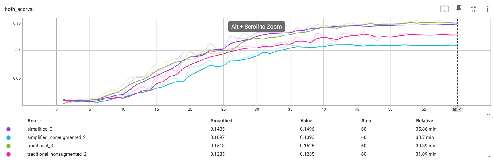
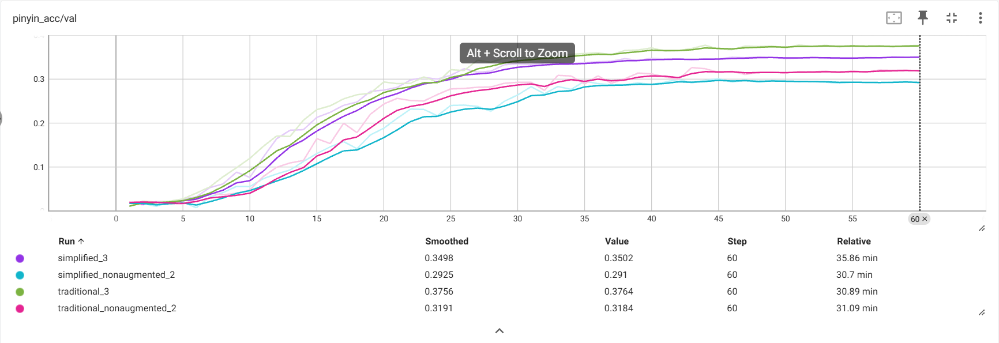
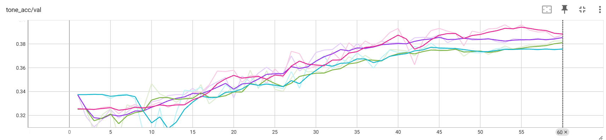

About
Education
PhD in Mathematics — UC Berkeley, 2024
Dissertation: Ribbon Concordances and Character Varieties
BS in Mathematics and Physics, Honors — UT Austin, 2017
Interests
In my free time, I enjoy studying Chinese and reading history books.
Projects
Hanzi Exploration
2026Used convolutional neural nets to predict pronunciations of Chinese characters from their image. As expected, traditional characters proved more fruitful for prediction, since they contain more etymological information. Augmenting the data with slight rotations and scaling also improved performance. Interestingly, there was a statistically significant correlation between correct pinyin prediction (without tone) and tone prediction, but only among traditional characters — again suggesting traditional characters carry more information about pronunciation.



MNIST Digit Classification
2025Compared five approaches to classifying handwritten digits from the MNIST dataset: Linear Discriminant Analysis, Quadratic Discriminant Analysis, SVM, SVM with an Earth Mover's Distance kernel, and a convolutional neural net.
| Method | Accuracy |
|---|---|
| Neural net (CNN) | 0.9906 |
| SVM-EMD | 0.9620 |
| SVM | 0.9573 |
| QDA | 0.9429 |
| LDA | 0.8730 |